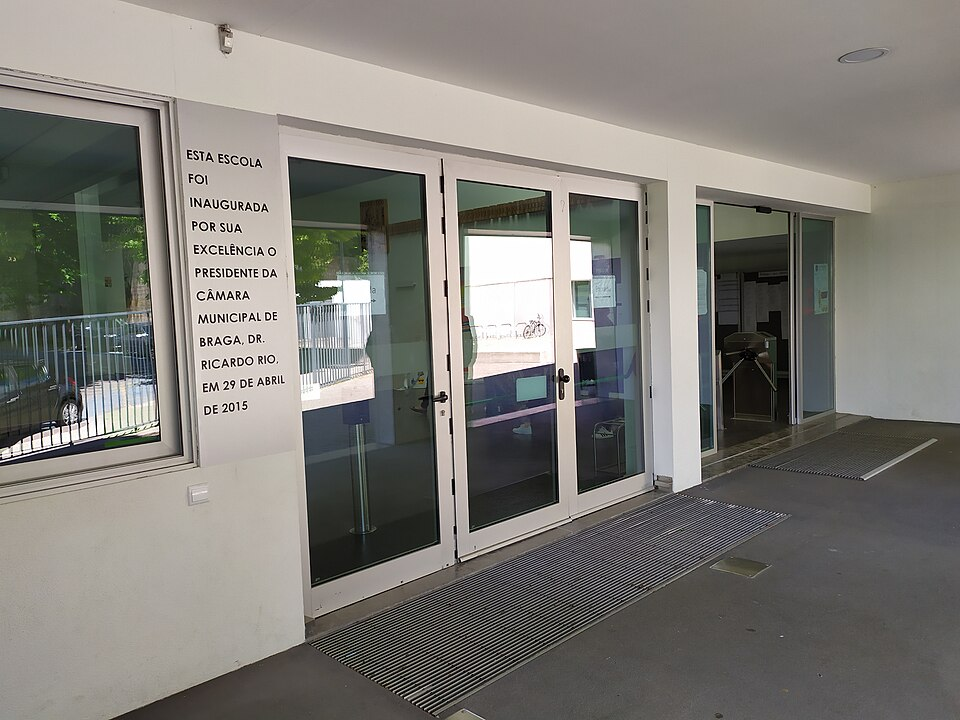

학교 정문 안쪽 안내 구역 (이미지) · 사진: Joseolgon / Wikimedia Commons, CC0
국제학교 오픈데이·학교 방문(School Tour) — 한 시간 방문에서 무엇을 보고 무엇을 물을까
1. 학교를 보는 방법은 세 가지입니다
학교가 외부에 문을 여는 방식은 보통 세 가지이고, 쓰임이 각각 다릅니다.
· 오픈데이(Open Day) — 여러 가정을 한 번에 초대하는 행사입니다. 학교 전체를 훑어보고 분위기를 느끼기에 좋습니다. 대신 질문할 시간이 짧고 답도 일반적인 수준에 머뭅니다.
· 개별 학교 투어(School Tour) — 한 가정을 대상으로 담당자가 안내합니다. 우리 아이 학년과 상황에 맞춘 답을 들을 수 있어 실제 판단에는 이쪽이 훨씬 유용합니다.
· 온라인 설명회 — 아직 그 나라에 가지 않았거나 이동이 어려운 가정에 적합합니다. 다만 복도와 교실의 분위기까지는 알기 어렵습니다.
그래서 순서를 이렇게 잡으시길 권합니다. ① 온라인 설명회나 오픈데이로 후보를 서너 곳으로 줄이고, ② 진짜 보내실 한두 곳만 개별 투어를 요청합니다. 처음부터 모든 학교를 개별 투어로 도시면 체력과 일정이 먼저 바닥납니다. 운영 방식은 학교마다 다르니 학교에 직접 문의해 확인하세요.
2. 가기 전에 준비할 세 가지
· 우리 아이의 기본 정보를 한 장으로. 현재 학년, 다니는 학교와 교육과정(한국 학교인지 국제학교인지), 영어 학습 기간, 수학 진도, 그리고 옮기려는 시점. 담당자는 이 정보가 있어야 구체적으로 답할 수 있습니다. 없으면 답이 "그건 아이마다 달라요"로 끝납니다.
· 홈페이지에서 답을 찾을 수 있는 것은 미리 읽고 지운다. 교육과정 종류, 학년 범위, 방과후 활동 목록 같은 것들입니다. 이걸 현장에서 물으면 귀한 시간을 종이에 적힌 내용 듣는 데 씁니다.
· 질문은 다섯 개로 줄인다. 많이 묻는 것보다 답을 끝까지 듣는 편이 낫습니다. 다음 절의 표에서 오른쪽 칸 중 우리 아이에게 해당하는 것만 고르시면 됩니다.
3. 안내문에 이미 있는 질문 vs 가서야 알 수 있는 질문
| 주제 | ❌ 안내문에 이미 있는 질문 | ✅ 가서야 알 수 있는 질문 |
|---|---|---|
| 자리 | 신입생을 뽑나요? | 우리 아이 학년에 지금 자리가 있나요? 없다면 대기는 어떻게 관리되나요? |
| 영어 지원 | 영어 지원 프로그램이 있나요? | 대상이 어떻게 결정되고, 보통 언제까지 받으며, 그동안 어떤 수업을 빠지게 되나요? |
| 학년 구성 | 몇 학년까지 있나요? | 학년이 올라갈수록 반 수가 줄어드나요? 상급 학년으로 이어지는 데 별도 조건이 있나요? |
| 편입 적응 | 편입생도 받나요? | 학기 중에 들어온 아이의 첫 몇 주를 학교가 어떻게 돕나요? 담당자가 정해지나요? |
| 수학 배치 | 수학 수업이 있나요? | 수학은 수준별로 나뉘나요? 나뉜다면 언제 정해지고 나중에 바꿀 수 있나요? |
| 소통 | 학부모 상담이 있나요? | 성적이 떨어질 때 학교가 먼저 연락하나요, 부모가 물어야 하나요? 창구는 누구인가요? |
오른쪽 칸 질문들의 공통점이 보이실 겁니다. 전부 "우리 아이"가 주어입니다. 그리고 답이 학교마다 확연히 다릅니다. 바로 그 차이가 입학 후 1년을 가릅니다. 영어 지원과 학습 지원의 구분은 EAL 안내와 Learning Support 안내에, 상담 창구를 쓰는 법은 학부모 상담 준비법에 따로 정리해 두었습니다.
4. 그 자리에서 눈으로 확인할 다섯 가지
말로 듣는 것 말고, 걸으면서 보는 것들입니다. 이건 자료로는 절대 알 수 없습니다.
· 복도의 소리. 수업 중인 시간대에 복도가 지나치게 조용한지, 교실에서 아이들 목소리가 들리는지. 발표와 토론이 많은 학교는 소리가 납니다.
· 벽에 붙은 결과물. 게시된 학생 과제가 최근 것인지, 잘한 아이 몇 명 것만 붙어 있는지 아니면 반 전체 것이 붙어 있는지.
· 도서관의 상태. 책이 많은지가 아니라 실제로 쓰이는 흔적이 있는지. 자리에 앉아 있는 아이가 있는지.
· 아이들이 어른을 대하는 태도. 낯선 방문객과 눈이 마주쳤을 때의 반응. 학교의 분위기가 가장 정직하게 드러나는 지점입니다.
· 급식과 화장실. 사소해 보이지만 아이가 매일 겪는 곳입니다. 아이를 데려가셨다면 여기서 표정을 보세요.
그리고 하나 더. 집에서 학교까지 실제로 이동해 보세요. 가능하면 등교 시간대에 같은 경로로 가 보시는 것이 좋습니다. 학교 안내문의 소요 시간은 막히지 않을 때 기준인 경우가 많습니다. 통학이 길어지면 방과 후에 쓸 수 있는 시간이 그만큼 줄고, 그건 과제와 활동 계획을 전부 바꿉니다.
5. 아이를 데려갈까
· 초등 저학년 — 부모님만 먼저 다녀오시는 편이 낫습니다. 이 나이의 아이는 짧은 방문에서 받은 인상 하나로 좋고 싫음을 정해 버립니다. 놀이터가 좋았다는 이유로, 혹은 낯선 사람이 말을 걸어서 무서웠다는 이유로 판단이 굳습니다.
· 초등 고학년 이상 — 함께 가시는 편이 좋습니다. 본인이 다닐 학교이고, 복도에서 마주치는 또래의 분위기는 부모님보다 아이가 더 정확히 읽습니다.
· 데려가실 때 미리 합의해 둘 것 — "오늘은 정하러 가는 게 아니라 보러 가는 것이고, 집에 와서 같이 이야기한 뒤에 정한다." 이 한마디를 해 두시면 아이가 부담 없이 둘러봅니다.
6. 다녀와서 30분 안에 남길 것
기억은 생각보다 빨리 흐려집니다. 두 번째 학교를 보고 나면 첫 학교의 인상과 섞입니다. 그래서 차에 타자마자, 늦어도 그날 안에 네 줄만 적어 두세요.
· ① 오늘 들은 답 중 가장 구체적이었던 것 — 그 학교가 실제로 하고 있는 일입니다.
· ② 답이 흐렸던 질문 — 흐린 답은 그 자체로 정보입니다. 다시 물어볼 목록이 됩니다.
· ③ 아이가 보인 반응 — 말보다 표정입니다.
· ④ 통학 실제 소요 시간 — 다녀온 그 날짜와 시간대까지 함께.
학교를 두세 곳 보고 나면 이 네 줄이 나란히 쌓입니다. 그때 비로소 비교가 됩니다. 머릿속으로만 비교하면 마지막에 본 학교가 유리해집니다.
7. 방문 기록을 준비로 연결합니다
학교가 정해졌다면 그다음은 입학 평가와 첫 학기입니다. 방문에서 들은 답이 여기서 그대로 쓰입니다.
📖 영어 — 학교가 말한 기준에 맞춰 준비합니다
영어 평가를 어떤 방식으로 보는지 들으셨다면 그 형식에 맞춰 준비하면 됩니다. 공통으로 필요한 것은 읽기 수준, 지시어 이해(describe·explain·compare가 각각 무엇을 요구하는지), 그리고 주장 → 근거 → 분석의 글 뼈대입니다. → 영어 공부법 · 영어 레벨테스트 종류
📐 수학 — 배치가 나뉘는 학교라면 그 전에 손봅니다
수학이 수준별로 나뉘고 입학 시점에 결정된다는 답을 들으셨다면, 그 전에 영어 용어와 서술형 풀이를 정리해 두는 것이 실익이 큽니다. 계산은 되는데 용어 때문에 아래 반으로 배치되는 경우가 실제로 많습니다. → 알지브라 공부법
🗂️ 서류와 일정 — 한 장으로 모읍니다
지원 마감, 평가 일정, 제출 서류를 방문 기록 옆에 함께 적어 두세요. 학교마다 날짜가 다르고, 이걸 따로 관리하면 반드시 하나를 놓칩니다. → 입학원서 체크리스트 · 편입·전학 총정리 · 국제학교 입학 준비 총정리
정리
학교 방문의 값은 얼마나 많이 들었는지가 아니라 안내문에 없는 답을 몇 개 얻어 왔는지로 정해집니다. 그러니 가기 전에 홈페이지를 읽어 질문 목록에서 지우시고, "우리 아이"가 주어인 질문 다섯 개만 들고 가세요. 걸으면서는 복도의 소리와 벽에 붙은 결과물을 보시고, 돌아오는 길에 네 줄을 적으세요. 그 네 줄이 두세 곳 쌓이면 비교가 되고, 비교가 되면 결정이 쉬워집니다. 학교가 정해진 뒤의 준비는 30분 무료 상담으로 함께 짚어 드리겠습니다.